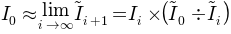

Desmearing
Desmear the 1-D SAS data (q, I, dI) by method of Lake & Jemian.
$Id: desmear.py 1703 2011-08-31 13:47:14Z jemian $
To desmear, apply the method of Jemian/Lake to 1-D SAS data (q, I, dI).
Source Code Documentation
-
class lake.desmear.Desmearing(q, I, dI, params)[source]
desmear the 1-D SAS data (q, I, dI) by method of Jemian/Lake
To start Lake’s method, assume that the 0-th approximation
of the corrected intensity is the measured intensity.
| Parameters: |
- q ([float]) – magnitude of scattering vector
- I ([float]) – SAS data I(q) +/- dI(q)
- dI ([float]) – estimated uncertainties of I(q)
- params (obj) – Info object with desmearing parameters
|
|---|
| Parameters: | extrapolation_object (obj) – class used for extrapolation function |
|---|
-
SetLakeWeighting(LakeWeighting='fast')[source]
| Parameters: | LakeWeighting (str) – one of constant, ChiSqr, or fast |
|---|
-
SetQuiet(suppress_output=True)[source]
if True, then no printed output from this routine
-
first_step()[source]
the first step
-
iterate_and_callback()
Compute one iteration of the Lake algorithm
and then call the supplied callback method.
Use this method to run a desmearing operation in another thread.
-
iteration()[source]
Compute one iteration of the Lake algorithm.
No need to call the callback routine,
the caller can take care of that directly.
-
traditional()[source]
the traditional LAKE code algorithm
This method is called from the class constructor.
If this method is called directly, it has the effect
of clearing any desmearing progress and resetting
back to start. This technique is used here if
the list of ChiSqr results is not empty.